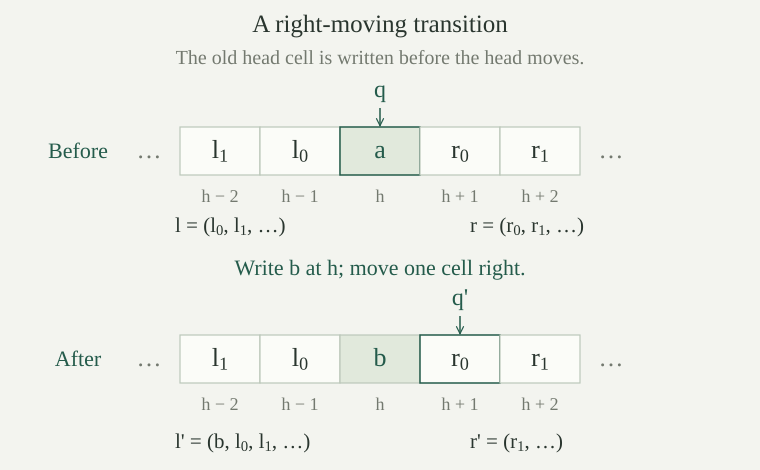

Fix any Turing machine \(T\) with finite alphabet \(\Gamma\), blank \(\square\), distinct mark \(\mathtt{1}\), finite state set \(Q\), and initial state \(q_0\). Put \(g=|\Gamma|\) and \(s=|Q|\). A labeling consists of bijections
with \(\gamma(\square)=0\), \(\gamma(\mathtt{1})=1\), and \(\sigma(q_0)=0\). Such labelings exist. Start with any finite bijection for the alphabet and interchange the blank's image with \(0\). The mark's new image is different from \(0\), so interchanging it with \(1\) leaves the blank fixed. An analogous interchange labels the initial state \(0\). The distinct symbols imply \(g\ge2\), and the initial state implies \(s\ge1\).
Choose these maps before choosing any input or running time. Their finite inverse tables recover symbols and states from valid labels. This is a construction for each fixed finite machine, not an asserted algorithm that accepts arbitrary abstract finite sets. We retain the combined write, move and state-change convention, including stay, and the input with exactly \(n\) marks. These differ from the separate-action and \(n+1\)-mark conventions in the cited source.
Use the square pairing function \(p\), its projections \(u,v\), and the list code \(C\). Write \(K(a,l)=1+p(a,l)\) for prepending an entry. Write \(\operatorname{hd},\operatorname{tl},\operatorname{len},E\) for numerical head, tail, length and indexed access. Both \(\operatorname{hd}(0)\) and \(\operatorname{tl}(0)\) are zero; \(E(l,i)=0\) after a list ends.
A zipper code is the number
Here \(q\) is a state label, \(a\) is the current symbol label, and \(l,r\) code the left and right lists, each nearest cell first. The coordinates of any number \(c\) are recovered by
A valid zipper code satisfies \(q(c)<s\), \(a(c)<g\), and \(E(l(c),i)<g\), \(E(r(c),j)<g\) for all \(i<\operatorname{len}(l(c))\), \(j<\operatorname{len}(r(c))\). Denote this predicate by \(\operatorname{Val}(c)\). Every number decodes into four coordinates and two finite lists, but some contain invalid labels. The number \(0=\langle0,0,0,0\rangle\) is valid: it records the initial state and an entirely blank tape.
For a global configuration \(X=(q,h,t)\), the representation relation \(X\mathrel{\sim}c\), relative to our fixed labeling, means that \(c\) is valid, \(q(c)=\sigma(q)\), \(a(c)=\gamma(t(h))\), and for every \(i\in\mathbb N\),
The subtractions are in \(\mathbb Z\). A missing list entry represents a blank because its default label is \(0\). The code records the tape relative to the head; it does not record \(h\). Recorded blank entries at a list's far end are permitted. Thus this is a relation between configurations and codes, not a claimed bijection.
Every global configuration has a representing zipper code. Conversely, for every valid code \(c\) and every chosen head coordinate \(h\in\mathbb Z\), there is a global configuration with head \(h\) represented by \(c\).
For \((q,h,t)\), choose \(A\in\mathbb N\) containing the tape support in \([-A,A]\), and put \(B=A+|h|+1\). Record the \(B\) labels \(\gamma(t(h-1)),\ldots,\gamma(t(h-B))\) on the left and \(\gamma(t(h+1)),\ldots,\gamma(t(h+B))\) on the right. Together with \(\sigma(q)\) and \(\gamma(t(h))\), these define a valid code. For indices below \(B\), indexed access recovers the recorded cell. For indices at least \(B\), the corresponding position lies outside \([-A,A]\), so both its label and the default list entry are zero. Hence all representation equations hold.
Conversely, use \(\sigma^{-1}(q(c))\) as the state and place \(\gamma^{-1}(a(c))\) at \(h\). At \(h-i-1\) and \(h+i+1\), place the inverse labels of the respective list entries, using zero beyond the lists. Validity supplies these inverse labels; the two sides and the head partition all integer positions. Outside \([h-\operatorname{len}(l(c)),h+\operatorname{len}(r(c))]\) every cell is blank, so this really is a finite-support global tape. Its coordinate equations give the required relation.
In a binary alphabet, with state label \(0\), compare \(\langle0,1,C([]),C([])\rangle\) and \(\langle0,1,C([0]),C([0,0])\rangle\). Can they represent the same global configuration? Must their numerical codes agree?
Both represent a tape with a single mark at its head and blanks everywhere else, in the state labeled \(0\). A recorded zero agrees with the default zero after a list ends, so all representation equations coincide. But the codes are \(p(0,p(1,p(0,0)))=4\) and \(p(0,p(1,p(1,2)))=676\), respectively, since \(C([0])=1\) and \(C([0,0])=2\). They need not agree. Keeping such padding avoids an unnecessary operation to delete far-end blanks after each transition.
Give movements \(L,S,R\) the movement labels \(0,1,2\). For each \(i<s\), \(j<g\), let the instruction code \(k_{ij}\) be \(0\) when the actual row \(\delta(\sigma^{-1}(i),\gamma^{-1}(j))\) halts. If that row returns \((q',b,m)\), put
The truth indicator \([P]\) is \(1\) if \(P\) holds and \(0\) otherwise. Define the numerical table lookup on all numbers by
For valid labels the unique matching summand is exactly the required instruction. Outside the two finite ranges, every summand is zero. Equalities and finite sums make \(\tau\) primitive recursive: the bounds and the entries are fixed constants of \(T\). If \(w=\tau(q,a)>0\), its decoded new state, written symbol and movement are \(u(w-1)\), \(u(v(w-1))\), and \(v(v(w-1))\). The subtraction can be truncated at zero because these projections are used as an instruction only when \(w>0\).
Define the numerical halt test and stopped numerical transition by \(H(c)=[\neg\operatorname{Val}(c)\text{ or }\tau(q(c),a(c))=0]\) and \(D(c)=c\) when \(H(c)=1\). Otherwise decode \(\tau(q(c),a(c))\) as new state label \(q'\), written symbol label \(b\), and movement. With \(l=l(c)\), \(r=r(c)\), the new state is \(q'\) and its other coordinates are:
| Movement | Current | Left list code | Right list code |
|---|---|---|---|
| \(L\) | \(\operatorname{hd}(l)\) | \(\operatorname{tl}(l)\) | \(K(b,r)\) |
| \(S\) | \(b\) | \(l\) | \(r\) |
| \(R\) | \(\operatorname{hd}(r)\) | \(K(b,l)\) | \(\operatorname{tl}(r)\) |
These formulas include an empty side: its head is the blank label \(0\) and its tail is still empty. Moving right pushes the symbol just written, not the old current symbol, onto the left. Moving left pushes it onto the right. Pushing a blank is allowed.

If \(X\sim c\), then \(H(c)=1\) exactly when \(X\) is halting. If \(X\longrightarrow X'\) is an actual transition, then \(X'\sim D(c)\). Consequently, if \(A_T\) is stopped advance, then \(A_T(X)\sim D(c)\), whether or not \(X\) is halting.
Representation makes \(c\) valid and identifies its state and scanned symbol labels. The finite lookup therefore returns zero exactly when the actual row is missing. For a present row, it decodes the labels of the actual new state, written symbol and movement. All newly stored entries are valid labels, including the default blank, so each update preserves validity.
For a right move, the actual new head is \(h+1\). Its cell was the old nearest right entry, \(\operatorname{hd}(r)\). The new left entry at index zero is the written symbol \(b\), now at position \(h\). At left index \(i+1\), the prepended list gives old left entry \(i\), at position \(h-i-1\), exactly the position \((h+1)-(i+1)-1\) relative to the new head. On the right, taking the tail gives old right entry \(i+1\), at \(h+i+2=(h+1)+i+1\). These are all the representation equations after the move.
For a left move, the new head is \(h-1\) and its cell is the old nearest left entry. Taking the left tail gives old left entry \(i+1\), at \(h-i-2=(h-1)-i-1\). The new right entry zero is \(b\) at the old head; entry \(i+1\) is old right entry \(i\), at \(h+i+1=(h-1)+(i+1)+1\). A stay move changes only the current label to \(b\), just as the actual write changes only position \(h\). The identities for heads and tails also hold for empty lists: every absent entry is zero, so moving beyond a recorded side reaches a blank. Finally, a halted configuration is fixed by both stopped operations, which proves the last assertion.
Define the all-marks list code by \(J(0)=0\), \(J(n+1)=K(1,J(n))\). Induction gives \(J(n)=C([1,\ldots,1])\) with exactly \(n\) entries. The numerical initialization is
The actual input configuration of \(T\) represents \(I(n)\). At input zero, every cell is blank. At input \(n+1\), the current cell is the first mark, there are \(n\) further marks on the right, and all cells to the left are blank. After either list ends its default zero gives the remaining blank cells. This verifies the representation at every index, including the zero-input boundary.
For a valid code \(c=\langle q,a,l,r\rangle\), form \(w=K(a,r)\) and put \(B=\operatorname{len}(w)=1+\operatorname{len}(r)\). Define its numerical readout \(O(c)\) to be the least \(i<B\) with \(E(w,i)\ne1\), or \(B\) if there is no such index. For invalid \(c\), set \(O(c)=0\). This is a bounded first-nonmark search, with a specified exhaustion value.
If \(X=(q,h,t)\sim c\), then \(O(c)=\operatorname{out}(X)\). At index zero, the entry of \(w\) is \(\gamma(t(h))\); at index \(i+1\), it is \(\gamma(t(h+i+1))\). Thus for every \(i\), \(E(w,i)=\gamma(t(h+i))\). In particular, index \(B\) has default value zero, so it is a nonmark. Since \(\gamma\) is injective and labels the mark \(1\), the least nonmark on the actual tape is precisely the bounded search just defined, even when an extra alphabet symbol ends the block. Hence \(O(c)\le B\).
Take a valid zipper with current label \(1\) and right list \([1,0,1]\). What is its readout? Does counting the entries equal to \(1\) give the same answer?
The current-plus-right list is \([1,1,0,1]\), so indices zero and one are marks and index two is a blank. Its readout is \(2\). There are \(3\) marked entries in that list, but the mark after the blank is ignored by the actual readout convention. The numerical search has bound \(B=4\); it stops at index \(2\), before needing the default blank at index \(4\).
For our fixed finite machine and fixed labeling, \(I,D,H,O\) are primitive recursive on all natural-number inputs. The validity test \(\operatorname{Val}\) and the table lookup \(\tau\) are primitive recursive as well.
Pairing, projections, \(K\), head, tail, length and indexed access are the established primitive-recursive data operations. To test all labels of a coded list \(l\), use the coded-list fold with accumulator initially \(1\) and update \(z\mapsto z[a<g]\) at each entry \(a\). After each prefix the accumulator is one exactly when all that prefix's labels are valid. The fold is bounded by the numerical list code, since every nonempty tail strictly decreases it. Two such folds and the comparisons \(q<s\), \(a<g\) construct \(\operatorname{Val}\).
The finite sum defining \(\tau\) uses only equality tests and fixed constants. Its projections after truncated subtraction decode the instruction. The Boolean combinations defining \(H\) and the finite cases in construct \(D\) by primitive-recursive case distinctions. Thus no unbounded search occurs in a transition.
The recurrence for \(J\) is primitive recursion, and the zero/successor cases give \(I\). Finally, for a valid \(c\), the readout test \(E(K(a,r),i)\ne1\) and bound \(1+\operatorname{len}(r)\) are primitive recursive. The bounded least-witness operation returns the first successful index below that bound, or the bound itself. Combining this with the invalid-code case gives \(O\). These constructions prove membership in the primitive-recursive class, rather than merely asserting that the routines terminate.
Define the numerical run by \(R(n,0)=I(n)\), \(R(n,k+1)=D(R(n,k))\). Define its prefix code by
where \(A\) is coded concatenation. Both functions are primitive recursive, and \(P(n,k)=C([R(n,0),\ldots,R(n,k)])\). In particular this list has length \(k+1\), and its entry at \(i\le k\) is \(R(n,i)\).
Primitive recursion with parameter \(n\) constructs \(R\) in exactly \(k\) prescribed iterations of \(D\). Its totality does not require the machine to halt. A second primitive recursion, using the already constructed \(R\) and primitive-recursive concatenation, constructs \(P\). At zero it is the singleton initial configuration. At the next index it appends the next configuration, so induction proves the exact prefix identity and the stated length and entries. This is the same finite-record construction underlying history recursion.
Let \(X_k\) be the actual stopped run of \(T\) on unary input \(n\). For every \(k\), \(X_k\sim R(n,k)\). Consequently \(X_k\) is halting exactly when \(H(R(n,k))=1\), and its readout is \(O(R(n,k))\). The arithmetic machine \(M_T=(I,D,H,O)\) therefore computes exactly \(F_T\), on defined and undefined inputs.
At zero this is . If the relation holds at index \(k\), relates actual stopped advance to \(D\), giving the relation at \(k+1\). This proves the invariant by induction. It also shows that every numerical configuration reached from an input is valid; the artificial behavior assigned to invalid codes is never reached.
The halt-test equivalence comes from the one-step theorem, and the readout identity from . Our \(D\) already fixes halted codes, so the arithmetic-machine stopped run is exactly \(R\). A halting time of either model is therefore a halting time of the other, with the same output. If the tape computation never halts, every numerical halt test is zero; conversely such zero tests exclude every tape halting time. This proves equality of the partial functions, not only agreement where both happen to halt.
A valid halting history at input \(n\) is a list code \(s\) of positive length \(\ell\) such that every entry is valid, \(E(s,0)=I(n)\), \(H(E(s,\ell-1))=1\), and
Write this predicate as \(\operatorname{Hist}_T(n,s)\). The output-certificate test is
The list length guard excludes the empty history, whose default entries otherwise look like configuration zero. A certificate with just one configuration is allowed precisely when the initial configuration halts. The earlier nonhalting tests exclude repeated halted configurations, even though the stopped run is indexed at every later time.
The predicates \(\operatorname{Hist}_T\) and \(\operatorname{Cert}_T\) are primitive recursive. Every valid halting history has \(E(s,i)=R(n,i)\) for \(i<\operatorname{len}(s)\), and
All the tests use the primitive-recursive routines already constructed and list length and entries. The validity scan is bounded by the list length, and the transition scan by its truncated predecessor; both lengths are bounded by the list code. Primitive-recursive bounded quantification therefore constructs the history test. Projections and the final output equality construct the certificate test, including the explicit nonempty guard.
For soundness, induction on the list index starts with its actual first entry \(I(n)\); each next entry is the specified \(D\)-successor, hence equals \(R(n,i+1)\). The last entry supplies a numerical halting time and the certified output. The run simulation gives the same tape output. In particular, any two valid certificates for a fixed input agree in output, by uniqueness of halting tape outputs.
For completeness, take the least tape halting time \(k\). The prefix \(P(n,k)\) records the corresponding numerical run. Every entry is valid by the simulation invariant; earlier halt tests are zero by minimality, and the last test is one. Pairing its list code with the common output gives the required certificate. These two directions prove the displayed equivalence. The extra validity tests accept every arithmetic-machine history because its entries, by the same induction, belong to the valid numerical run; thus they do not change the earlier arithmetic history theorem.
Label the successor machine's states \(\mathrm{scan},\mathrm{back},\mathrm{halt}\) by \(0,1,2\). Compute the numerical configurations on input zero through the first halt. Is the initial configuration code zero invalid? Does the empty history code zero certify this computation?
The initial zipper is \(\langle0,0,0,0\rangle=0\). Its row writes a mark and moves left in state \(1\). The left side is empty, so the new current label is zero; the written mark becomes the right singleton, of code \(K(1,0)=3\). This gives \(\langle1,0,0,3\rangle=p(1,p(0,p(0,3)))=6562\).
Now the back-state blank row moves right in state \(2\). It pushes the written blank onto the left, giving \(K(0,0)=1\), takes current mark \(\operatorname{hd}(3)=1\), and leaves right code zero. The final zipper is \(\langle2,1,1,0\rangle=p(2,p(1,p(1,0)))=27\). It is halting with readout \(1\). The retained left blank explains why this final zipper is not the shortest representation of its tape.
Thus \(0,6562,27\) are the three configurations, agreeing with the actual two-transition run. Configuration zero is valid. The history \(C([0,6562,27])\), paired with output \(1\), certifies it; the empty history \(C([])=0\) fails the positive-length guard. A number used as a configuration and the same number used as a list of configurations have different roles.
For every Turing machine \(T\) over arbitrary finite \(\Gamma,Q\) with the specified blank, mark and initial state, its unary partial function \(F_T\) is partial recursive. More precisely, the constructed arithmetic machine \(M_T\), with its fixed labeling, has exactly the same output graph and divergence behavior.
Choose the labeling from and construct \(I,D,H,O\) as above. They are primitive recursive, so \(M_T\) is an arithmetic machine. By , its partial function is exactly \(F_T\). Apply the established theorem that every arithmetic-machine function is partial recursive. Equivalently, search for the least numerical code passing \(\operatorname{Cert}_T(n,w)\) and extract its first pairing coordinate. The test is total primitive recursive, and all successful certificates have the same output. If no certificate exists, that search and the tape computation are both undefined. This establishes the assertion on every input.